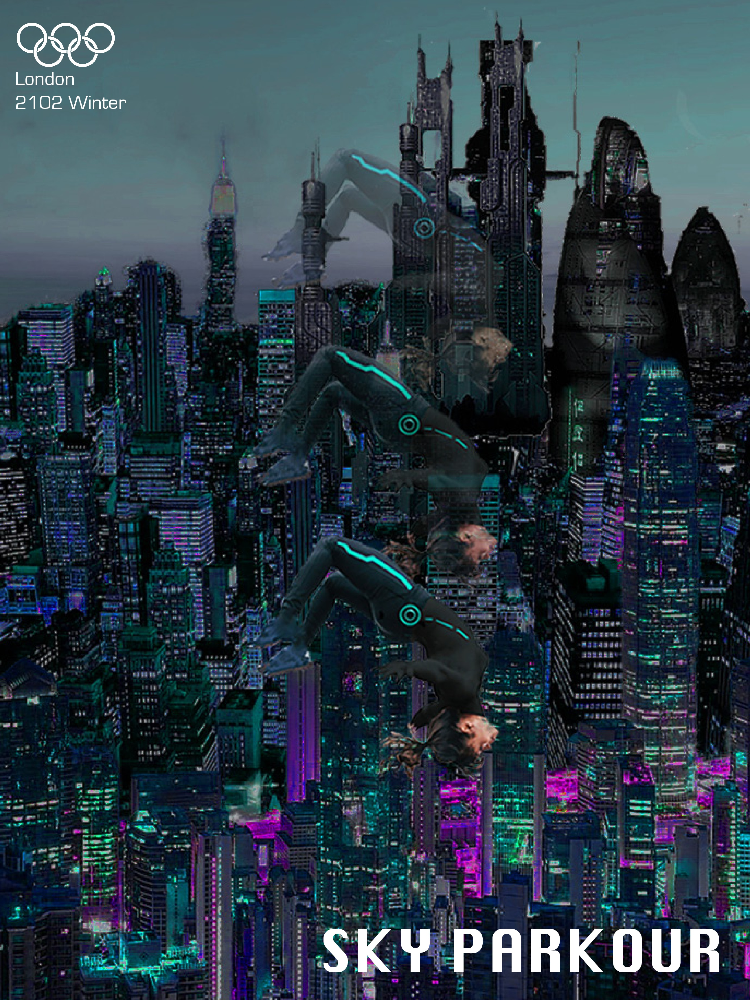

Topic
My teammate and I were given a task to invent a new Olympic sports that would be held in the near or far future and to design a poster for it. Given the unique assignment, we initially faced challenges in developing the sporting events that would be embraced as Olympics sports in the 2100's.
We began with extending the existing winter olympic sports by technological advancements that would aid their performances, but then we let our imaginations take over. We imagined that in 2100’s, the technologies would have advanced greatly that the sporting event could be held across entire cities, not confined to arenas or stadiums. In addition we added a dystopian setting for the background of the sporting events which allowed us to come up with more creative sports, like men fighting against robots or humanity simply no longer having nature or rural areas to hold the sporting events.
In the end we each came up with Sky Parkouring and Robot Hunting, and I designed a poster for Sky Parkouring. Sky Parkouring is developed from parkouring, but differs from the original sports that the participants would parkour across the skylines of huge cities, jumping and flying on top of buildings. They are not allowed to come below the skyline level and will race each other to complete laps. Meanwhile, they will be marked on their physical agilities and techniques recorded by a drone camera throughout the parkour.
Theme and Reference
When I heard the world futuristic, two words came to my mind: cyberpunk and dystopia, which both were defining characteristics of creating a futuristic ambience. Thus my teammate and I incoporated neon color schemes of cyberpunk and urban areas with skyscrapers and buildings into our background design.
For reference, I referred to futuristic works of art relfected in media, including movies such as Ghost in the Shell and video games such as Tron: Evolution. I focused on their color schemes, incorporation of urban backgrounds, and how the person interacted with cyberpunk environment.
Brainstorming
When brainstorming the poster for the sporting event, I focused on caputring the action of the participant on an extreme urban setting. I wished to highlight the physical action and the agility of the participant, which were critical for my invented sport. For reference, I searched people doing actual parkour in mid air.
In addition I wished the person to blend in well with the background to illustrate a scene that the person was flying over the buildings. Thus I experimented with different angles and perspectives on capturing the person's motion from eagle-eye, bottom and side-view, as if a camera was taking snapshots of the participant's motion. In the end I chose the side view which focused on the participant's pose in mid-air than other perspectives did.
Initial Designs
I came up with two of my initial poster designs based on my choice of color scheme, background, and point of view of the scenery.
I attempted to generate a cyberpunk atmosphere by using its color scheme including neon green, pink, and cyan, which the background; I have recreated a more futuristic city than the present city of London by collaging different parts of skyscrapers. In addition to capture a falling motion, I created a gradient effect of the person, which I reversed its direction in the final design.
Final Poster
Overall, I aimed to design a poster that would grab the reader's attention and interestingly illustrate the setting and the event.
I enjoyed coming up with a novel sport feasible in the future that challenged the man’s abilities and pushed them to their limits, such as parkouring over skylines instead of streets. In addition I also enjoyed challenging myself to experiment with a new style of design using realisitic photos than using minimalistic, abstract designs I would usually use. Designing a poster broadened my spectrum of delivering a convincing story and my design approach, which was overall a very fulfilling challenge and experience.
